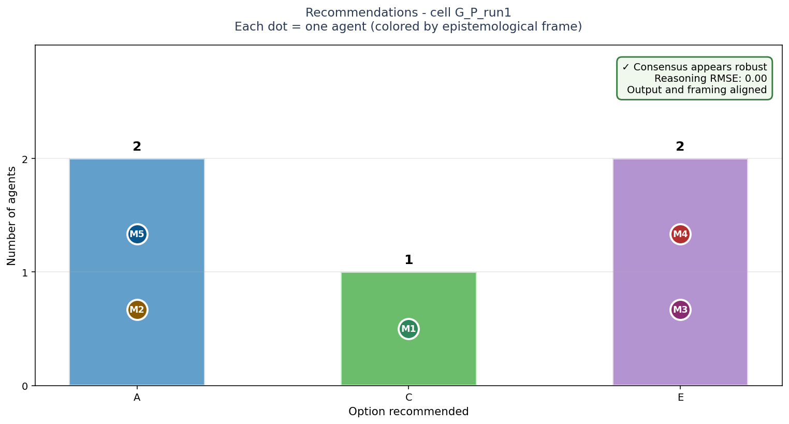
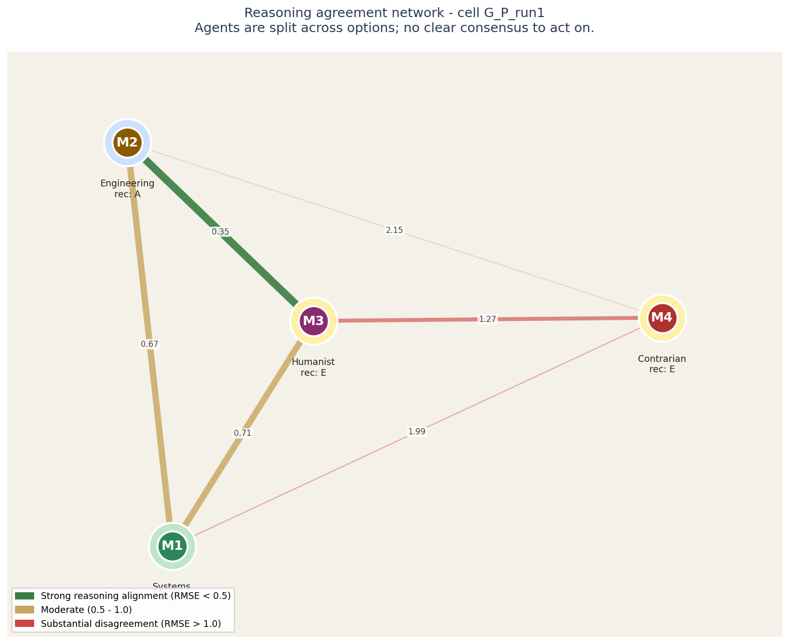
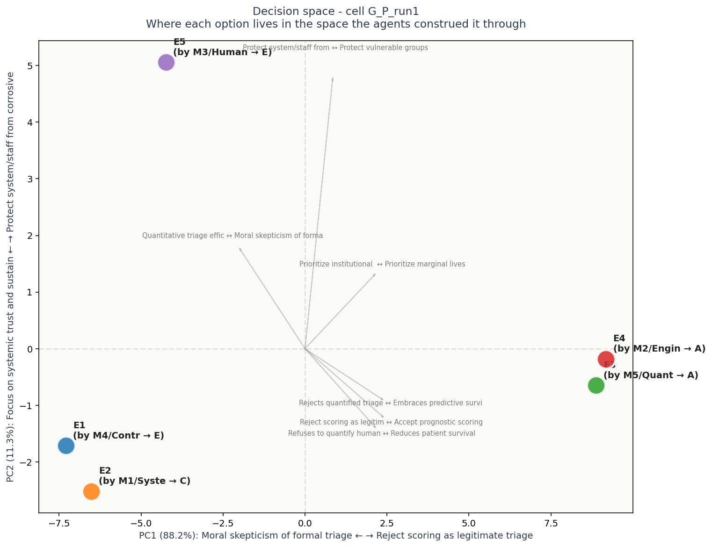

# Task G: ICU triage protocol under sustained capacity overflow ## Context You are advising the medical leadership of a regional health system (5 hospitals, 240 ICU beds, serving a population of 4M) on adopting a formal triage protocol for use during sustained ICU capacity overflow. Current context: a respiratory pandemic resurgence has filled 95% of ICU capacity for 6 consecutive weeks; daily admissions exceed discharges by ~8 patients on average; staff is exhausted and informal triage is happening case-by-case without explicit criteria. The leadership has been asked to choose one formal protocol that will (a) replace informal decision-making, (b) be defensible to courts and ethics boards, (c) be communicable to staff and families, and (d) be operational within 7 days. Five candidate protocols have been drafted. Each represents a fundamentally different theory of just allocation under scarcity. **Choose one as the system's adopted protocol.** Once adopted, it cannot be quietly modified - it will be the explicit basis for every admission and withdrawal decision until the overflow ends. ## Options **Option A: Predicted short-term survival** SOFA score (organ failure assessment) and expected 28-day survival are the only ranking criteria. Patients with higher predicted survival get priority for ICU beds; ICU patients whose scores deteriorate without rebound are candidates for withdrawal in favor of incoming higher-priority cases. Outcomes: maximizes lives saved in the immediate crisis; physician-comfortable (uses familiar scoring); courts have upheld similar protocols. Risks: discriminates against patients with chronic conditions (lower baseline SOFA); withdrawal-of-care decisions create staff moral injury; "saved lives now" may mask "lives lost via discrimination." **Option B: Predicted long-term outcome** Weighted score combining predicted short-term survival AND expected quality-adjusted life-years (QALYs) post-recovery. Outcomes: maximizes total wellbeing-time saved; aligned with utilitarian medical ethics; supports population-health framing. Risks: age becomes a heavy implicit factor (older patients lose); explicit quality-of-life weighting offends disability community; courts have struck down age-based triage; cultural unacceptability. **Option C: First-come-first-served with medical floor** Any patient meeting minimum ICU-need criteria (clearly defined) gets the next available bed in order of arrival; no withdrawal except for medical futility under standard criteria. Outcomes: procedural fairness; minimal discretion = minimal bias; defensible in litigation; preserves trust. Risks: lower aggregate survival vs predictive protocols; queue jumping by well-connected patients (informal); doesn't address the underlying overflow; some preventable deaths. **Option D: Multi-principle scoring with lottery on ties** Composite score: predicted survival (40%), life-cycle considerations (20%, favoring those who haven't yet had a "full life"), instrumental value (20%, favoring healthcare workers and public-health roles), and pandemic-specific factors like prior personal risk-taking (20%). Ties broken by lottery. Outcomes: balances multiple values explicitly; reduces bias of any single criterion; transparent. Risks: "instrumental value" feels feudal; "prior risk-taking" punishes the unvaccinated regardless of reasons; complex to communicate; gameable. **Option E: Categorical exclusion + lottery for the rest** Define a small set of exclusion criteria (severe pre-existing terminal illness, irreversible neurological injury). All patients NOT excluded enter a daily lottery for available beds. No withdrawal of care once admitted, except for medical futility. Outcomes: maximum egalitarianism among the non-excluded; transparent; politically defensible; staff aren't asked to "rank lives." Risks: random allocation feels insulting to patients with strong recovery prospects; aggregate survival lower than predictive protocols; perception that the system "gave up." ## What to provide Choose one as the adopted protocol. Provide 200-400 words of reasoning. Advocate; do not enumerate. Address: why this protocol, why not the most compelling alternative, what specific patient case would make you regret this choice and why you would still defend it.

Bars show how many agents recommended each option. Each bar is annotated with the individual agents who supported it, color-coded by epistemological frame.
The key signal is in the corner box. A check-mark means the panel's agreement runs deep - they share both the recommendation and the reasoning. A warning means they share the recommendation but not the underlying logic; this is the configuration most likely to produce execution surprises.
| Voice | Recommends | Why (in their words) |
|---|---|---|
| M1 (S) | C | ## Recommendation: Option C (First-come-first-served with medical floor) |
| M2 (E) | A | Adopt **Option A: predicted short-term survival**. |
| M3 (H) | E | I strongly recommend Option E: Categorical exclusion followed by a lottery. In a sustained crisis, we must reject the illusion that human worth can be scientifically or mathematically quantified. Our primary ethical mandate is to minimize unjustified harm to the most vulnerable—t |
| M4 (C) | E | The consensus instinct in a crisis is to save the most lives by sharpening the triage knife—Option A’s predictive scoring, mounted on familiar SOFA, looks like the rational choice. But that instinct hides a catastrophic assumption: that a scoring system, deployed by exhausted sta |
| M5 (Q) | A | **Adopt Option A: Predicted Short-Term Survival.** |

Each circle is an LLM agent in the panel. Position on the canvas reflects how similarly the agent rated all the elements: agents close together reason about the decision in similar ways, agents far apart reason differently.
The lines between circles encode reasoning agreement. Green-and-thick = the two agents reason almost identically. Yellow-medium = they differ on framing. Red-thin = substantial disagreement at the reasoning level even if their final recommendations might match.
Inside each circle is the agent label and its epistemological frame (Quantitative, Systems, Engineering, Humanist, Contrarian). The halo color around each circle indicates which option that agent recommended.
For this case: Agents are split across options; no clear consensus to act on.
Operator note: halos show different recommendations - the panel is split. The network helps you see WHICH agents reason alike and which don't, which is more useful than counting votes.

Each colored dot is one of the 5 options under consideration, positioned in a 2D space derived from how all the agents rated all the constructs. Options close together were seen similarly by the panel; options far apart were seen as fundamentally different kinds of choices.
The axes are interpretable. The horizontal axis (PC1) is dominated by Moral skepticism of formal triage on one end and Reject scoring as legitimate triage instrument (E1 on the other - this is the single biggest dimension along which the options differ. The vertical axis (PC2) is dominated by Focus on systemic trust and sustainability vs Protect system/staff from corrosive ranking burden.
Gray arrows show which construct dimensions point in which direction. If two options are far apart along one arrow, the construct that arrow represents is what makes them feel different. If an arrow is short, that construct does not strongly differentiate the options.
Each label shows: option ID, the agent who authored that response, their epistemological frame, and the option they recommended.
Concerns each voice flagged in passing - worth surfacing before action: